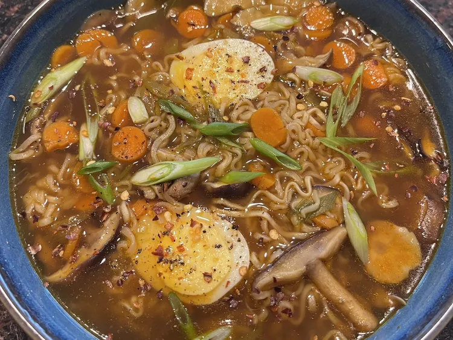

Ramen

Desciption
Fancy ramen noodles with veggies.
Ingredients
- 4 cups water
- 8 ounces sliced fresh mushrooms
- 1 bunch green onions, thinly sliced, divided
- 1 large carrot, sliced
- ½ yellow onion, sliced
- 2 tablespoons soy sauce
- 2 tablespoons minced garlic
- 1 tablespoon sriracha sauce
- 1 teaspoon sesame oil
- 1 teaspoon rice wine vinegar
- ½ teaspoon ground white pepper
- ½ teaspoon cracked black pepper
- 2 (3 ounce) packages chicken-flavored ramen noodles
Directions
- Combine water, mushrooms, 1/2 the green onions, carrot, onion, soy sauce, garlic, Sriracha sauce, sesame oil, rice wine vinegar, white pepper, black pepper, and flavor packets from ramen in a large pot. Bring to a boil. Add noodles and cook, occasionally stirring, until noodles are tender yet firm to the bite, about 5 minutes.
- Reduce heat to a simmer and cook until vegetables are tender, about 10 minutes. Serve topped with remaining green onions.